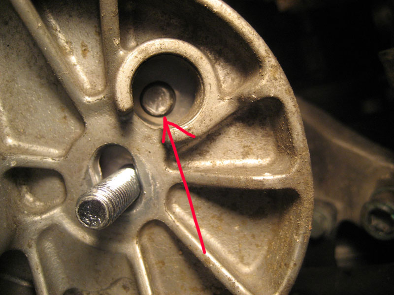

B6/7 S4 Motor Mount Replacement
Procedure Note: It has been said that one can remove a motor mount without removing the sway bar or related mount brackets. I didn't say that though. Some of these so-called "shortcuts" result in more labor time and could potentially lead to hours of frustration. Take my advice and do it the "long" way, you have more room to work and it will take less time than you think.
If your starter is showing any signs of needing replacement (acting up in cold weather), now is the time to do it. The starter procedure calls for removing the passenger motor mount anyway. If you are going to replace the starter, check out the starter DIY I wrote.
- Tools Needed:
- Jackstands and floor jack
- Variety of metric wrenches and sockets (shallow and deep)
- 6mm and 8mm hex (highly recommend socket style)
- Ratchet extensions and swivel are nice (recommend wobble extensions)
- Breaker bar and/or cheater pipe
- Loctite
- Parts Needed:
- Motor mounts (recommend Stern)
- Replacement Zip ties
- Replacement hardware for sway bar end links (lower bolt, or maybe it's a good time to replace your end links)
- Replacement hardware for sway bar bracket bolts. 2 per side
- Replacement hardware for lower motor mount bracket. 3 per side, 1 long bolt (PN: N-909-568-03) and 2 short (PN: N-906-630-02)
- Torque Specs:
- Sway bar end link bolt (do not reuse) (lower): 25 Nm
- Sway bar bracket bolt (do not reuse) (2 per side): 25 Nm
- Upper motor mount bracket bolts (use loctite): 42 Nm
- Bracket to motor mount nut (2): 23 Nm
- Longer bolt on lower motor mount bracket (do not reuse): 110 Nm + 1/4 turn
- Pair of shorter bolts for lower motor mount bracket (do not reuse): 75 Nm
- Either put your car on ramps or raise the frontend and put it on jackstands. I preferred here to remove my front wheels because it gave me more room to move around, but is not required. You'll be removing your sway bar, some people like to do that with the car on ramps but it can be done either way. Remove the lower engine cover.
- Remove the front sway bar. Starting on the left side, put your jack just under the sway bar where it meets the end link. You'll be removing the 16mm bolt that goes into the sway bar. Lift the jack just enough to support the sway so that when you start loosening the end link bolt the sway bar won't move. Repeat for the right side. The 16mm bolts securing the sway bar to the end links are one-time use bolts and should not be reused. See the top of this procedure for torque specs.
- Unbolt the 4 (2 per side) 13mm nuts holding the sway bar bracket in place and then remove the sway bar and put aside.
- Support the engine by placing your floor jack under the oil pan. With a 2x4 between the pan and jack, lift the engine just enough so it is just supported by the jack. If you see your car start to raise up, you went too far.
- Starting with the passenger motor mount. Remove the bracket that the starter wiring harness is secured to by removing the 13mm bolt at the center of the motor mount. Snip any zip ties that are holding the starter wiring hardness to the bracket, remove the bracket and put it aside. The 13mm nut is circled in red in the photo below
- Unbolt the 3 18mm bolts that secure the lower motor mount bracket to the chassis/subframe. Make note of the position of the bolts in the slots. You may want to mark them though I don't think it's necessary. These bolts are one-time use bolts and should not be reused. See the top of this procedure for torque specs. These bolts are on very tight, don't be afraid to bust out a cheater pipe and/or breaker bar. The 18mm bolts are circled in blue in the photo below.
Once unbolted, remove the lower mount bracket and set aside. Once removed, you will be able to clearly see the passenger motor mount with sensor attached to the right. See photo below.
- Disconnect the mount sensor. If you're installing Stern mounts, they come with resistors that you'll plug into the female side (to wiring harness). You'll want zipties so that you can secure the resistor to the wiring harness.
- Unbolt the 3 8mm allen bolts that secure the upper motor mount bracket to the engine block. Two of them are easy to see while the 3rd is a bit hidden. With 1 or 2 wobble extensions and an 8mm allen socket you'll be able to get to all of these bolts no problem. Once all 3 bolts are undone, wrangle the upper motor mount bracket (with motor mount still attached) out of there.
In the photo below you can see 2 of the 3 hex bolts circled in red, the approximate location of the 3rd is shown in blue.

- Attach the new mount to the upper bracket (23 Nm) and bolt the upper bracket with mount attached back to the engine block. Use loctite on those bolts and torque to 42 Nm. Make sure to put the right side up. The lower side of the motor mount has a metal nub that sticks out and locks into a certain position on the lower bracket.
You can see in the photo below that the Stern mounts are slightly taller than the OEM mounts. This could be attributed to my OEM mounts having 100k miles on them, or they could really be taller. Either way, I had to lift my engine a bit when bolting up the lower bracket.
If you find that you need to lift your engine higher than it is currently sitting (supported by your jack), then I'm afraid to say that you're going to have to remove your bumper and put the frontend into service position. You need to get the snub mount disengaged so that you can properly lift the engine up, otherwise when you lift your jack it will just lift up the entire frontend.
- The rest of the installation of the passenger bracket is pretty straight forward. You may have to lift the engine a bit more since a new mount will be taller than the old, used mounts you're pulling out. The lower bracket bolts should not be reused. See top of procedure for torque specs. Remember to put the wiring bracket back in place last and zip tie any wires that you previously snipped. You'll also want to zip tie the Stern resistor, if applicable.
Make sure that the metal nub on the lower side of the mount is matched up with the hole in the lower bracket. Twist the mount as needed to lineup. See below photos showing bottom of mount (uninstalled) and then installed lined up properly.

- Driver side, this one is a little tighter but not my much. Remove the 13mm nut that holds the mount to the lower bracket.
- Remove the 3 18mm bolts that hold the lower mount bracket to the chassis/subframe. Put the lower bracket aside.
You can now see the driver mount clearly as shown in the photo below. The blue circle is highlighting one of the 3 8mm hex bolts that hold the upper bracket in place.
- One of the 3 hex bolts that bolt the upper bracket to the engine is a bit hard to reach with the OEM mounts in place. I found it easier to unbolt the 13mm nut at the top of the motor mount and then remove the mount while leaving the upper bracket in place. You'll need a 13mm stubby wrench for this and you'll have to hold the mount with your extra hand so it doesn't spin. Disconnect the mount sensor once you have enough room to access it.
- At this point you can continue on and remove the upper bracket, or you can start with the reinstall. I found it easier to remove the bracket, then bolt the new mount to the bracket while it was out of the car and then bolt up the entire assembly at once. This is possible with the Stern mounts due to their smaller size compared to OEM, but probably not possible/recommended with OEM mounts. If you're going to remove the upper bracket, you'll also have to unbolt a 10mm bolt that secures the power steering line to the bracket. Remember to use loctite when reinstalling the upper bracket. Be careful not to cross thread the upper bracket bolts, it's somewhat easy to do with the upper bolts so take your time.
The photo below is the upper bracket with the 3 8mm hex bolts circled in red. The A/C line bracket bolt (10mm) is circled in blue. To remove the upper bracket, remove all circled bolts.
- With the upper bracket removed, you can clearly see the A/C compressor and power steering pump. In the photo below the A/C compressor is circled in blue and the power steering pump in red.
- Rest of driver mount install is straight forward. Lower bracket bolts are not reusable. Don't forget the power steering bracket bolt, if you removed it at Step 13. Zip tie the resistor connector if applicable.
Again, make sure the metal nub is lined up:
- Reinstall your sway, use new hardware and torque to spec, bolt up your wheels if applicable and install the belly pan.